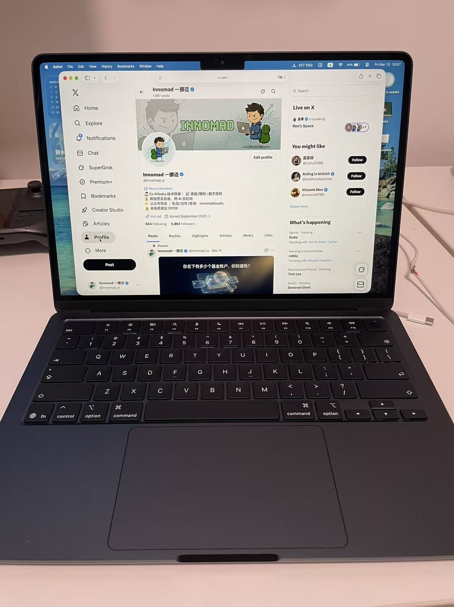

每次换新 Mac，都是一个新的开始。我从来不食用 Mac 的迁移工具，从零开始的机会太难得了。
昨天发了一条 X 推文之后，评论区不少朋友推荐了很多好用的 App。我全部仔细看了一遍，趁热打铁按照我自己的需求整理了一份 Mac 软件清单，分享给大家。

这份清单是按照我当前的习惯整理的，暂时没有把评论区所有推荐的 App 都加进来。后续随着试用深入，可能会有增删调整。如果你有特别好用的 Mac 软件推荐，欢迎留言交流。
第一步: 命令行环境
拿到新 Mac，第一件事不是装 App，而是把命令行搭好。后面大部分软件都靠它安装。
前置依赖
# Xcode Command Line Tools, 编译工具链, 很多开发工具的前置依赖, 比如 git
xcode-select --install
这玩意不到 2GB，装完你就有了 git、clang、make 这些基础工具。和完整的 Xcode（30GB 起步）不是一回事，别搞混了。
包管理器
Homebrew，macOS 的包管理器，一切的起点。无论是命令行工具还是图形化应用都能用它安装。
Shell 增强
brew install fnmCLI 工具
这一堆全部 brew install 一把梭:
brew install fzf zoxide eza ripgrep bat gh yt-dlp imagemagick ffmpeg
brew install --cask font-jetbrains-mono-nerd-font font-hack-nerd-font
逐个说下为什么装:
- fzf, 模糊搜索
- zoxide, 智能目录跳转
- eza, 现代版 ls
- ripgrep, 极速文本搜索
- bat, 带语法高亮的 cat
- gh, GitHub CLI
- yt-dlp, 视频下载
- imagemagick, 命令行图像处理
- ffmpeg, 音视频转码
AI 编程助手
curl -fsSL https://claude.ai/install.sh | bash
npm install -g @openai/codex
curl -fsSL https://opencode.ai/install | bash